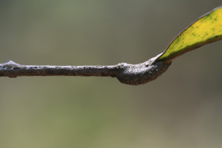
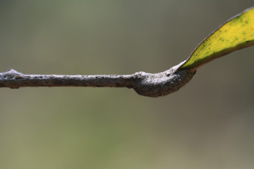

Images :


 



| Habit : | Shrubs to small trees , up to 5 m tall. |
| Leaves : | Leaves compound , paripinnate , rarely imparipinnate , up to 50 cm long, alternate , spiral ; rachis striate , generally brown, pulvinate , terete , glabrous ; petiolule 0.5-1 cm, stout, canaliculate , glabrous ; leaflets 4-7 pairs, opposite or subopposite , 12-28 x 4.5-9.5 cm, narrow elliptic-oblong to oblanceolate , apex acuminate with blunt tip, base acute or slightly asymmetric , margin entire , chartaceous to subcoriaceous , glabrous ; midrib raised above; secondary_nerves 7-12 pairs; tertiary_nerves broadly reticulate . |
| Inflorescence / Flower : | N/A |
| Fruit and Seed : | N/A |